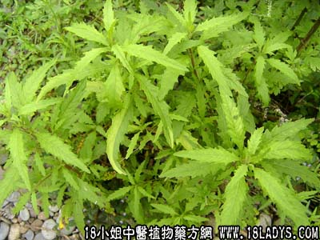

古籍名：石荠苧《本草拾遗》。
别名：热茀草。
植物名：石荠苧。
生长环境：本品为一年生直立草本。村庄附近空旷稍干燥地或路旁生长，阳生性草本。
分布：广东到处皆有，此外我国南部和中部各地亦常见。
入药部分：全草。
采集期：夏季。
自采地点：山岗。
性味：性微温、味辛、气香。
功能：祛风散寒、止痒、燥湿、辟秽、辟蚊蝇（烟熏）。
主治、用量和用法：1、热痱：生用或干用适量，煎水外洗；2、无名肿毒；3、疮疖；4、皮肤痕痒，均用法如上。
验方：（治皮肤疥癞热毒方）土荆芥、土防风、九里阴、旱辣蓼、天芥菜各等分，煎谁外洗。
（方解）方中土荆芥、土防风疏风止痒；天芥菜清凉解毒；九里阴清热散毒，旱辣蓼有杀虫灭蚊癞作用。全方为疏风、清热、消毒之剂，煎谁外洗局部，直接治疗有效。
（方歌）皮肤疥癞热毒方，土荆旱蓼土防风，九里阴同天芥菜，等分煎洗立即松。
结语：以上为土荆芥的介绍，想了解更多关于荆芥还为您推荐↓↓↓↓